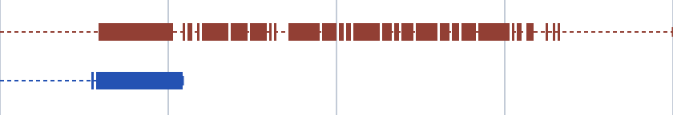

A faster way
to replan.
How much computation does a robot need before its next move?
On a Tesla T4, three-step FP16 eager cut median in-loop replan time from 862 to 275 ms. It succeeded in 78.4% of 500 matched simulation episodes, compared with 75.4% for the released policy.

One move.
One fresh look.
A vision-language-action policy turns images, an instruction and the robot’s state into movement. The released SmolVLA checkpoint predicts 50 actions per plan. In its closed-loop setting, it executes the first action and plans again from a fresh observation.

What changes between configurations?
The 605M-parameter LIBERO checkpoint uses a 32-layer SmolVLM backbone and a separate flow-matching action expert. The expert starts from Gaussian noise and predicts a direction at each Euler update. The experiment changes the number of updates, uses float16 for the backbone and expert, or captures the expert loop in a CUDA graph. All variants use the same pretrained weights. The small state and action projections stay in float32.
Where the time goes
The T4 emulates bfloat16. Switching the vision encoder to native float16 cut its isolated median from about 230 ms to 39 ms in a component profile. Fewer Euler steps reduce repeat work. CUDA graph replay then cuts the overhead of launching the expert’s kernels.
Inspect all 16 isolated timing configurations
What did the CUDA graph check establish?
In the 20 matched timing episodes, eager and graph execution agreed on the first action and final outcome in every pair. Full trajectories matched in ten pairs, also seen in an eager repeat. The larger success study below used eager execution.
Does the faster policy still succeed?
Every pair starts from the same task and initial state. The main three-step comparison uses fresh observations in both runs. The evaluator counts a success when the goal predicate holds within 280 actions. The comparisons use eager execution.
75.4% released · 78.4% three-step FP16
Paired 95% interval: −0.6 to +6.6 points.
The lower confidence bound clears the prespecified −5-point non-inferiority margin. The pooled three-step cohort includes 300 states added after the interim analysis.
Inspect outcomes across the ten tasks
What happened when the policy looked less often?
On the first 200 matched episodes, executing five or ten queued actions before looking again lowered success by 12.5 and 9.5 points respectively. The ten-action result did not clear the Holm-adjusted significance threshold. Reusing image features for up to five steps while refreshing robot state lowered success by 12.0 points. The study also found that reusing one noise sample for an entire episode reduced gripper chatter and dropped success from 77.0% to 23.5%.
How far do these results generalize?
The study covers one released checkpoint, one simulated task suite and one GPU model. The intervals describe paired episode outcomes. Across-task uncertainty is larger: the one-step confirmation has a task-cluster bootstrap interval of −1.0 to +12.7 percentage points.
One pair, in motion
Pick up the black bowl between the plate and the ramekin and place it on the plate. These two recorded simulations start from exactly the same scene.
When did the gripper close?

Task 0 · Initial state 0 · Seed 1000. Playback shows 20 frames per second. Clip duration reflects the number of simulated actions and cannot measure inference latency.